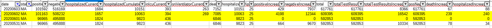

[Historical MA] Data is missing/incorrect for 6/1-6/2 in states_daily_4pm_et.csv
Issue number 473
andrewghaly opened this issue on June 4, 2020 at 4:09 pm
Labels Data quality Backfill
Data is missing for 6/01 and incorrect for 6/02
https://www.mass.gov/doc/covid-19-dashboard-june-1-2020/download - June 1 data
https://www.mass.gov/doc/covid-19-dashboard-june-2-2020/download - June 2 data

Note, that MA changed how they recorded cases on June 1st so it is expected to have that spike, but it looks like it should be slightly less
Comments
andrewghaly commented on June 18, 2020 at 9:52 am
Thanks @MattHilliard, I believe the same issue for #455 as well.
Thanks @andrewghaly for letting us know. MA’s update on 6/1 probably came too late for our 4pm publication time. I’ve updated our historical data for 6/1. It should show up on our site within an hour. The data for 6/2 looked good other than deltas, which should now be accurate with the fix to 6/1.